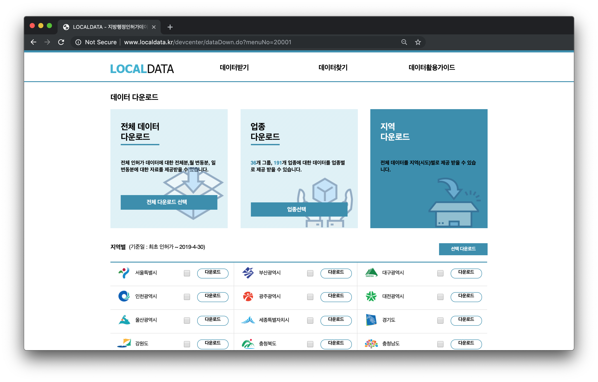

Updated : 2019년 5월 26일
문제 : 우리동네 치킨집은 몇 개일까?
치킨집 : 등록된 “업태구분명”에 “통닭”이 들어가는 모든 가게치킨집 갯수 계산

6260000_부산광역시_07_24_04_P_일반음식점.xlsx 하나의 파일만 사용 (쉽게 사용하기 위해서 data.xlsx로 이름을 변경해서 사용하겠습니다.)RStudio의 작업 디렉토리(working directory)를 0607_R 로 설정합니다. 기본 작업 디렉토리는 내 문서로 되어 있습니다. 다음 명령어를 입력합니다.
stores 변수에 저장한다.stores 변수의 여러가지 정보를 확인한다.stores 는 일종의 행렬로써 행과 열의 정보를 갖는다. 각 행은 행 번호가 있고, 각 열은 열 이름(colname)이 있다. 우리는 각 열 정보를 확인하고, 필요한 열를 모은다.
# stores 각 열의 이름
colnames(stores)
# "소재지전체주소" 열의 첫 6행
head(stores$소재지전체주소)
# "업태구분명" 열의 첫 6행
head(stores$업태구분명)
# "업태구분명" 열의 서로 다른 모든 값들의 모임
unique(stores$업태구분명)
# "사업장명" 열의 첫 6행
head(stores$사업장명)store_trim 변수를 새로 만들어 우리가 원하는 형태로 가공한다.먼저 편리함을 위해서 열 이름을 영어로 바꾼다. 그리고 다음 필터링을 적용하자.
stores_trim <- stores[, c("소재지전체주소", "업태구분명")]
colnames(stores_trim) <- c("address", "business")
# 금정구에 속하는 통닭 가게 데이터를 ck 변수로 할당
ck <- stores_trim %>%
filter(
str_detect(address, "금정구") &
str_detect(business, "통닭")
)
head(ck) # 잘 가공되었는지 확인예를 들면 “부산광역시 금정구 장전동 419-21번지”라는 주소에서 “장전동”만을 남기려고 한다면 어떤 방법을 사용하면 될까요? 여기서는 “[공백]장전동[공백]”를 모아서, 양쪽 [공백]을 제거하는 방법을 사용했습니다. 아래와 같이 텍스트를 가공하는 방식을 정규표현식(Regular Expression)이라고 합니다.
ck$address <- str_extract(ck$address, "\\s\\S+동\\s")
ck$address <- str_trim(ck$address, side="both")정규표현식에 통달하기는 아주 어렵지만, 간단한 정규표현식으로도 많은 것을 할 수 있다.
| 표현 | 역할 |
|---|---|
| \ 숫자 | |
| \ | 숫자 아닌 것 |
| \ | 공백 |
| \ | 공백 아닌 것 |
| [0-9] | 모든 숫자 |
| [A-Z] | 영어 대문자 |
| [a-z] | 영어 소문자 |
| [A-z] | 모든 영문자 |
| i+ | i가 최소 1회 이상 나오는 경우 |
| i{n1,n2} | i가 n1에서 n2회 나오는 경우경우 |
중요 이제 “address”에 속한 동 이름 이 몇 번 중복하느냐가 그 동에 속한 치킨집 갯수 입니다!
ck의 “address”열 하나에 대해서 중복 값을 센다.ggplot2 패키지를 사용해서 여러가지 방법으로 시각화를 해 봅니다. ggplot() 함수를 사용하는 시각화는 기본적으로 다음과 같은 구조를 따릅니다.
ggplot(data=OBJECT,
aes(x=column_1, y=column_2)) +
geom_xx() +
[추가옵션]data.frame() 함수는 주어진 대상을 데이터프레임 자료형으로 바꿔주는 함수입니다. 데이터프레임은 데이터 분석에 용이한데, 다음과 같은 특징들을 갖습니다.
우리는 치킨집 갯수에 관한 데이터프레임을 만들어 히스토그램으로 표현해봅니다.
df <- data.frame(table(ck$address))
head(df) # 내용 확인
colnames(df) <- c("address","chicken")
ggplot(df,
aes(x=address, y=chicken)) +
geom_bar(stat="identity") +
theme_bw()본 강의에서는 shp 확장자의 지도 데이터를 사용했습니다. 2019년 2월 업데이트 된 읍면동 지도데이터를 다운로드 합니다.
2019년 2월 읍면동.zip 압축파일 (약 37mb)https://drive.google.com/open?id=1PE4VE0qqAeVT07XHQGFhTVfP938nyC8j
0607_R 폴더 아래 map 폴더를 만들어 다운로드 한 압축파일을 압축해제합니다. 불러올 지도데이터 파일명은 TL_SCCO_EMD.shp 입니다.
install.packages("rgdal")
library(rgdal)
file_name <- "map/TL_SCCO_EMD.shp"
korea <- readOGR(file_name, stringsAsFactors=F)
head(korea)형태가 복잡합니다. 좀 더 이해하기 쉬운 형태로 다루기 위해서 아래 코드를 입력합니다.
한층 보기 쉬워졌습니다. 하지만 실제로 자료 구조가 바뀌진 않았다는 사실을 상기해주세요.
열 이름을 확인해보면 EMD_CD(읍면동 코드), EMD_ENG_NM(읍면동 영어 이름), EMD_KOR_NM(읍면동 한글 이름)으로 이루어져 있습니다. 이중에서 읍면동 코드 중 26으로 시작하는 번호가 부산이고, 2641로 시작하는 부분은 금정구 입니다. 우리는 2641로 시작하는 코드를 갖는 행을 gj라고 할당하여 이미지를 그려보겠습니다.
gj <- korea[grepl("^2641", korea$EMD_CD), ]
plot(gj) # 쉽게 그릴 수 있지만 다양한 옵션을 주기 어렵습니다.
ggplot(gj,
aes(x = long, y = lat)) +
geom_polygon(group = group),
color = "black",
fill = "white")경도(longitude), 위도(latitude)의 숫자 지도를 표현하는 방식에 따라 차이가 있습니다. 다음 코드를 실행해서 익숙한 경위도 단위로 바꿔봅니다.
# install.packages("sp")
library(sp)
gj <- spTransform(gj,
CRS("+proj=longlat +ellps=WGS84 +datum=WGS84"))
ggplot(gj,
aes(x = long, y = lat)) +
geom_polygon(group = group),
color = "black",
fill = "white")gj 변수는 현재 shp 파일로부터 읽어들인 자료로 S4 자료형인데 이를 다루기위해 df과 같은 자료형인 데이터프레임으로 변환한다.
우리가 원하는 데이터 형태는 다음과 같습니다.
| 경도(long) | 위도(lat) | 동 이름(address) | 치킨집 갯수(chicken) | … |
|---|---|---|---|---|
| … | … | … | … | … |
| … | … | … | … | … |
열의 순서는 상관없지만 위와 같은 정보로 정리하기 위해서 다음 변수들을 고려합니다.
dj는 지도자료로 모든 동 이름 정보를 모두 갖고 있습니다. dong 변수명으로 모든 동 이름을 저장합니다.
df는 각 동별로 치킨집 갯수 정보를 모두 갖고 있습니다. dong의 각 동이름에 치킨집 갯수를 병합하여 dong_df 변수에 할당하겠습니다. 다만, all=TRUE 옵션으로 df 에 없는 동 이름이 있을 경우, 해당 행의 chicken 열에 결측치 NA를 저장합니다. 이후에 이 부분을 모두 0으로 바꿔줍니다.
fortify() 함수로 지도데이터 gj 에 저장된 경위도 데이터 및 기타 정보를 데이터프레임 형태로 바꿔 gj_data 변수에 할당하겠습니다.
gj_data 는 동 이름을 갖고 있지 않습니다. 기준이 될 행 번호 열을 따로 만들어 각 행번호에 해당하는 동 이름을 지도데이터 gj에서 가져와 gj_data에 추가하여 gj_data_id에 할당하도록 하겠습니다.
이제 마지막으로 gj_data_id는 치킨집 갯수 이외의 우리가 원하는 모든 정보를 갖고 있습니다. dong_df 로부터 각 동에 해당하는 치킨집 갯수를 추가하여 gj_ck 변수에 할당하도록 하겠습니다.
gj_ck 자료로 색칠하기